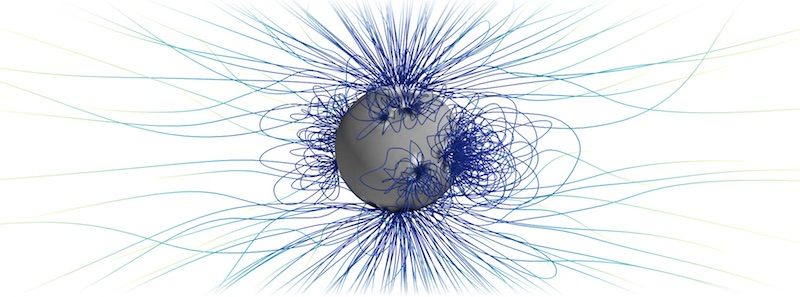
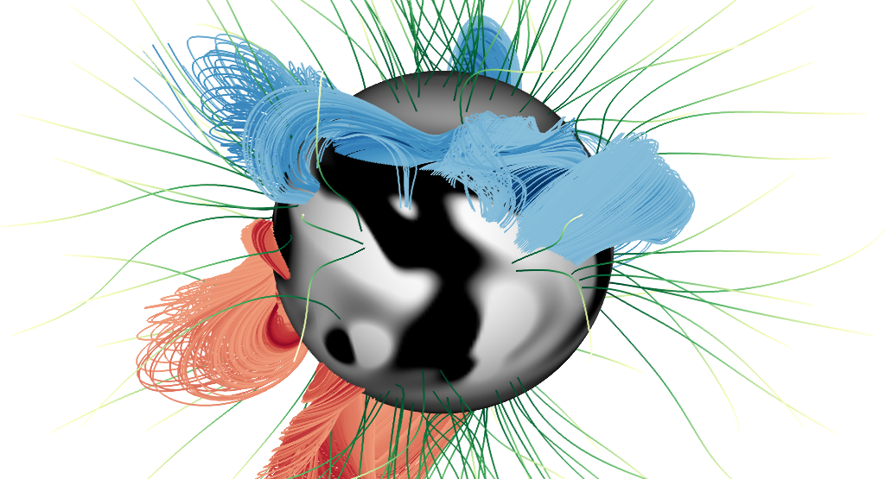
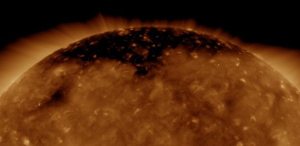

Research

Currently I'm working as a Research Scientist at the Southwest Research Institute in Boulder, Colorado. Here, I'm working with Craig DeForest and Derek Lamb to advance some aspects of the Fluxon model. Fluxon modeling relaxes magnetic fieldlines as discrete objects, allowing for huge computational advantages when compared with full MHD models. With a sequence of advancing boundary conditions to drive fluxon placement and evolution, we're studying the modeled solar wind and erupting Coronal Mass Ejections (CMEs).

I've worked with the Department of Mathematical Sciences at Durham University. Here, with Anthony Yeates and the Solar Magnetohydrodyanmics group, my research focused on the automated detection of modeled solar magnetic flux ropes. Through consistent tracking over the course of the solar cycle, we can gather statistics and gauge distinctions between eruptive and non-eruptive flux ropes. This code has been developed online as an open source tool, FRoDO.

My PhD research involved the automated detection of solar coronal holes, features appearing as dark patches in extreme ultraviolet (EUV) and x-ray imagery. As a source of fast solar wind streams, understanding their dynamics provides insight into their space weather consequences. Linking databases of EUV observations from SOHO/EIT and SDO/AIA we provided a database of coronal hole locations and properties stretching back to 1996. Through the multiple vantage points of the STEREO spacecraft, nearly full surface maps of coronal hole boundaries were computed on a 12-hour cadence for solar cycle 24. Through comparison of these coronal hole boundaries with computed open magnetic field boundaries, we can shed some insight into underlying physical parameters that drive surface flux transport.
CV
Education
PhD Physics - Montana State University - June 2015
M.S. Physics - Montana State University - May 2011
B.S. Physics - Georgia Institute of Technology - December 2007
Publications
Lowder, C., Lamb, D., & DeForest, C., Fluxon Modeling of CMEs and the Steady Solar Wind. (in preparation).
Lowder, C., Yeates, A., Magnetic Flux Rope Identification and Characterization from Observationally-Driven Solar Coronal Models. ApJ, 846, 106 (2017).
Lowder, C., Qiu, J., & Leamon, R. Coronal Holes and Open Magnetic Flux over Cycles 23 and 24. SoPh 292, 18 (2017).
Lowder, C., Qiu, J., Leamon, R. & Liu, Y. Measurements of EUV Coronal Holes and Open Magnetic Flux. ApJ 783, 142 (2014).
Lowder, C., Qiu, J., Leamon, R., & Longcope, D. Connecting Coronal Holes and Open Magnetic Field. (in preparation).
Lowder, C., Qiu, J., & Leamon, R., Transient Coronal Dimmings and connection to Heliospheric Open Flux. (in preparation).
Selected Conference Proceedings
Fluxon Modeling of CMEs and the Steady Solar Wind. AAS / SPD (2019).
Open Magnetic Flux and Coronal Holes: Probing the Polar Regions. Polar Perspectives Workshop (2018).
Magnetic Flux Rope Identification and Characterization from Observationally-Driven Solar Coronal Models. UK National Astronomy Meeting (2016 / 2017).
Connecting Coronal Holes and Open Magnetic Field via Numerical Modeling and Observations. Triennial Earth-Sun Summit / SPD (2015).
A Comparison of EUV Coronal Hole Measurements and Modeled Open Magnetic Field -or- How I learned to stop worrying and love the potential magnetic field. GSU Colloquium Series (2014).
Full Surface Automated Coronal Hole Detection and Characterization to Constrain Global Magnetic Field Models. AAS Meeting 220 (2012).
Transient coronal holes : A statistical study of coronal dimming regions. The Origin, Evolution, and Diagnosis of Solar Flare Magnetic Fields and Plasmas (2010).
Coronal Mass Ejections : A Study of Structural Evolution and Classification. AAS Meeting 210 (2007).
Research Experience
Southwest Research Institute - Department of Space Studies
Boulder, Colorado, United States
December 2017 - Present
Research Scientist
Durham University - Department of Mathematical Sciences
Durham, United Kingdom
August 2015 - September 2017
Postdoctoral Research Associate
Montana State University - School of Physics
Bozeman, Montana, United States
August 2009 - August 2015
Graduate Research Assistant
Montana State University - Solar Physics Group
Bozeman, Montana, United States
June 2007 - August 2007
NSF REU Research Assistant
University of Hawai'i - Institute for Astronomy
Honolulu, Hawaii, United States
May 2006 - August 2006
NSF REU Research Assistant
Teaching Experience
University of Colorado Boulder - Astrophysical and Planetary Sciences
Boulder, Colorado, United States
January 2020 - May 2020
Instructor
Georgia Southern University - Department of Physics
Statesboro, Georgia, United States
January 2008 - May 2008
Astronomy Laboratory Instructor
Georgia Southern University - Department of Physics
Statesboro, Georgia, United States
January 2008 - May 2008
Planetarium Lecturer